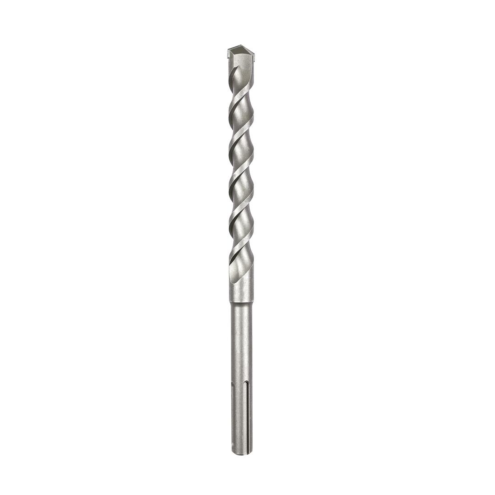

2608578014

| Shank diameter, mm |
18 |
| Diameter, mm |
20.00 |
| Total length, mm |
340 |
| Working length, mm |
195 |
| Packaging type |
Plastic packaging, hanger, with Euro hole |
| Pack quantity |
1 Pcs |
| Minimum order quantity |
100 Pcs |